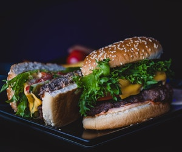

<ion-header [translucent]="true" class="ion-no-border">
  <ion-toolbar>
    <ion-title>
      Home
      <ion-icon name="chevron-down-outline"></ion-icon>
    </ion-title>
  </ion-toolbar>
</ion-header>

<ion-content [fullscreen]="true">

  <swiper-container [pagination]="false" [config]="config" class="ion-padding">
    <swiper-slide>
      
    </swiper-slide>
    <swiper-slide>
      
    </swiper-slide>
    <swiper-slide>
      
    </swiper-slide>
    <swiper-slide>
      
    </swiper-slide>
    <swiper-slide>
      
    </swiper-slide>
    <swiper-slide>
      
    </swiper-slide>
  </swiper-container>

  <ion-list>

    <ion-list-header>
      <ion-label>
        <h1>Restaurant Nearby</h1>
        <p>Discover unique test</p>
      </ion-label>
    </ion-list-header>

    <ion-item lines="none" class="lista-restaurantes">

      <ion-thumbnail slot="start">
        
      </ion-thumbnail>

      <ion-label>
        <h2>Stayfit</h2>
        <ion-text color="medium">
          <p class="pStyle">Italian, Mexican, Chinese</p>
        </ion-text>
        <!-- <span>
          <ion-icon name="star"></ion-icon>
          5 .
        </span> -->
        <!-- <ion-label>25 minutos</ion-label> -->
        <ion-text color="tertiary">
          <p class="distance"> 2.59 KM</p>

        </ion-text>
      </ion-label>

    </ion-item>

  </ion-list>

</ion-content>
